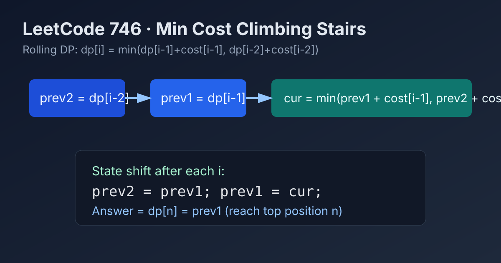

LeetCode 746: Min Cost Climbing Stairs (Rolling DP Transition)
LeetCode 746Dynamic ProgrammingArrayToday we solve LeetCode 746 - Min Cost Climbing Stairs.
Source: https://leetcode.com/problems/min-cost-climbing-stairs/

English
Problem Summary
You are given cost[i], the cost to step on stair i. You can start at step 0 or 1, and each move climbs 1 or 2 stairs. Return the minimum cost to reach the top (index n, one step beyond the last stair).
Key Insight
Define dp[i] as the minimum cost to reach position i. To arrive at i, we come from i-1 paying cost[i-1], or from i-2 paying cost[i-2]:
dp[i] = min(dp[i-1] + cost[i-1], dp[i-2] + cost[i-2])
Only the previous two states are needed, so we can optimize space to O(1).
Brute Force and Limitations
Trying all climb paths is exponential. Even memoized DFS is fine but still carries recursion overhead. Iterative rolling DP is cleaner and interview-friendly.
Optimal Algorithm Steps (Rolling DP)
1) Initialize prev2 = 0, prev1 = 0, representing dp[0] and dp[1].
2) For i from 2 to n, compute current state by the transition above.
3) Shift states: prev2 = prev1, prev1 = cur.
4) Return prev1 as dp[n].
Complexity Analysis
Time: O(n).
Space: O(1).
Common Pitfalls
- Mixing "step index" and "position index" (top is n, not n-1).
- Charging wrong stair cost in transition (cost[i-1] / cost[i-2]).
- Forgetting that starting at step 0 or 1 costs nothing initially.
Reference Implementations (Java / Go / C++ / Python / JavaScript)
class Solution {
public int minCostClimbingStairs(int[] cost) {
int prev2 = 0;
int prev1 = 0;
for (int i = 2; i <= cost.length; i++) {
int oneStep = prev1 + cost[i - 1];
int twoStep = prev2 + cost[i - 2];
int cur = Math.min(oneStep, twoStep);
prev2 = prev1;
prev1 = cur;
}
return prev1;
}
}func minCostClimbingStairs(cost []int) int {
prev2, prev1 := 0, 0
for i := 2; i <= len(cost); i++ {
oneStep := prev1 + cost[i-1]
twoStep := prev2 + cost[i-2]
cur := oneStep
if twoStep < cur {
cur = twoStep
}
prev2, prev1 = prev1, cur
}
return prev1
}class Solution {
public:
int minCostClimbingStairs(vector<int>& cost) {
int prev2 = 0, prev1 = 0;
for (int i = 2; i <= (int)cost.size(); ++i) {
int oneStep = prev1 + cost[i - 1];
int twoStep = prev2 + cost[i - 2];
int cur = min(oneStep, twoStep);
prev2 = prev1;
prev1 = cur;
}
return prev1;
}
};class Solution:
def minCostClimbingStairs(self, cost: List[int]) -> int:
prev2, prev1 = 0, 0
for i in range(2, len(cost) + 1):
one_step = prev1 + cost[i - 1]
two_step = prev2 + cost[i - 2]
cur = min(one_step, two_step)
prev2, prev1 = prev1, cur
return prev1/**
* @param {number[]} cost
* @return {number}
*/
var minCostClimbingStairs = function(cost) {
let prev2 = 0, prev1 = 0;
for (let i = 2; i <= cost.length; i++) {
const oneStep = prev1 + cost[i - 1];
const twoStep = prev2 + cost[i - 2];
const cur = Math.min(oneStep, twoStep);
prev2 = prev1;
prev1 = cur;
}
return prev1;
};中文
题目概述
给定数组 cost，其中 cost[i] 表示踩到第 i 级台阶需要支付的费用。每次可爬 1 级或 2 级，可从 0 或 1 开始，求到达楼顶（位置 n）的最小总花费。
核心思路
设 dp[i] 为到达位置 i 的最小花费。到达 i 只有两种来源：
dp[i] = min(dp[i-1] + cost[i-1], dp[i-2] + cost[i-2])
转移只依赖前两个状态，因此可把空间压缩为常数。
基线解法与不足
暴力枚举所有爬法会指数爆炸；记忆化搜索虽可通过，但实现上递归开销更高。滚动 DP 迭代版更直观稳定。
最优算法步骤（滚动 DP）
1）初始化 prev2 = 0、prev1 = 0，对应 dp[0] 和 dp[1]。
2）从 i = 2 遍历到 n，按状态转移计算当前最优值。
3）状态前滚：prev2 = prev1，prev1 = cur。
4）最终返回 prev1 即 dp[n]。
复杂度分析
时间复杂度：O(n)。
空间复杂度：O(1)。
常见陷阱
- 把楼顶误当成最后一个台阶下标（应为位置 n）。
- 转移时费用下标写错（应使用 cost[i-1] 与 cost[i-2]）。
- 忽略“可从 0 或 1 开始且初始不收费”的条件。
多语言参考实现（Java / Go / C++ / Python / JavaScript）
class Solution {
public int minCostClimbingStairs(int[] cost) {
int prev2 = 0;
int prev1 = 0;
for (int i = 2; i <= cost.length; i++) {
int oneStep = prev1 + cost[i - 1];
int twoStep = prev2 + cost[i - 2];
int cur = Math.min(oneStep, twoStep);
prev2 = prev1;
prev1 = cur;
}
return prev1;
}
}func minCostClimbingStairs(cost []int) int {
prev2, prev1 := 0, 0
for i := 2; i <= len(cost); i++ {
oneStep := prev1 + cost[i-1]
twoStep := prev2 + cost[i-2]
cur := oneStep
if twoStep < cur {
cur = twoStep
}
prev2, prev1 = prev1, cur
}
return prev1
}class Solution {
public:
int minCostClimbingStairs(vector<int>& cost) {
int prev2 = 0, prev1 = 0;
for (int i = 2; i <= (int)cost.size(); ++i) {
int oneStep = prev1 + cost[i - 1];
int twoStep = prev2 + cost[i - 2];
int cur = min(oneStep, twoStep);
prev2 = prev1;
prev1 = cur;
}
return prev1;
}
};class Solution:
def minCostClimbingStairs(self, cost: List[int]) -> int:
prev2, prev1 = 0, 0
for i in range(2, len(cost) + 1):
one_step = prev1 + cost[i - 1]
two_step = prev2 + cost[i - 2]
cur = min(one_step, two_step)
prev2, prev1 = prev1, cur
return prev1/**
* @param {number[]} cost
* @return {number}
*/
var minCostClimbingStairs = function(cost) {
let prev2 = 0, prev1 = 0;
for (let i = 2; i <= cost.length; i++) {
const oneStep = prev1 + cost[i - 1];
const twoStep = prev2 + cost[i - 2];
const cur = Math.min(oneStep, twoStep);
prev2 = prev1;
prev1 = cur;
}
return prev1;
};
Comments